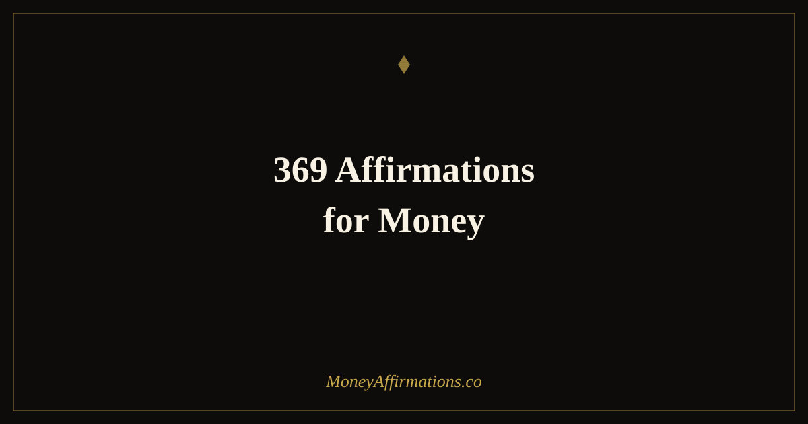

369 Affirmations for Money: The Complete Nikola Tesla Method Guide

Nikola Tesla famously believed that 3, 6, and 9 held a special significance in understanding the patterns of the universe. Whether or not you share that philosophical view, the 369 method built on his insight has become one of the most widely practised structured manifestation techniques in the world — and for a practical reason that has nothing to do with numerology: repetition across the day, anchored in writing, is one of the most effective ways to drive belief change at the neurological level.
These 30 money affirmations are designed specifically for use with the 369 method. Each one is a complete, potent statement suitable for 33 days of daily writing practice. Whether you are new to the method or returning to it with fresh intention, this collection gives you everything needed to combine the proven structure of the 369 practice with the financial belief change that affirmations produce.
What is the 369 method for money affirmations?
The 369 method is a structured affirmation writing practice: you choose a single affirmation and write it 3 times in the morning, 6 times at midday, and 9 times at night. You do this every day for a minimum of 33 days, writing by hand in a dedicated journal. The structure creates 18 individual writing moments each day — each one an opportunity to reinforce the chosen belief with full presence and intention.
The method works because writing activates different neural pathways than thinking or speaking alone. When you write an affirmation repeatedly and with focus, you are encoding it across multiple systems simultaneously: linguistic, motor, visual, and emotional. This multi-channel encoding produces deeper belief formation than any single-modality practice. For the broader manifestation framework that supports this method, the manifestation affirmations collection provides the complete context.
The 369 Daily Structure
Morning (rising) — write your chosen affirmation 3 times with full presence before starting your day.
Midday (lunch or break) — write your affirmation 6 times, reconnecting with your intention.
Night (before sleep) — write your affirmation 9 times, ending your day in the frequency of abundance.
Commit for 33 days minimum, writing by hand in a dedicated journal.
30 money affirmations for the 369 method
- I am a powerful money magnet and financial abundance flows to me easily and consistently.
- Money comes to me from multiple sources in increasing amounts every single day.
- I am wealthy, financially free, and I live the life I was created to live.
- I attract extraordinary financial opportunities and I have the courage to act on them.
- I am aligned with the energy of abundance and money is drawn to me naturally.
- My income grows steadily every month and I manage it with wisdom and gratitude.
- I deserve to be paid generously for my skills, my time, and the value I create.
- I release all resistance to money and open myself fully to receiving wealth.
- I have more than enough money for everything I need, want, and give away.
- Financial freedom is mine and I build it one excellent decision at a time.
- Money is my friend, my tool, and my ally — it serves my highest purpose.
- Unexpected wealth reaches me regularly because I have made myself ready to receive it.
- I am grateful for every pound that flows through my life and I use it wisely.
- My wealth grows because I think abundantly, act consistently, and believe completely.
- I am the creator of my financial reality and I create it with clarity and intention.
- Abundance is my natural state and I return to it easily no matter what has come before.
- I am worthy of a wealthy life and I build it with patience, purpose, and persistent action.
- My financial goals are met with ease because I am focused, consistent, and fully committed.
- I attract the people, the ideas, and the opportunities that multiply my income and my wealth.
- Every financial step I take moves me closer to the complete freedom I am building.
- I charge what my work is worth and I receive that amount without apology or hesitation.
- Money loves to be in my hands because I respect it, invest it, and let it grow.
- I live in a state of financial abundance — present, growing, and deeply appreciated.
- I am becoming wealthier with each passing day and I celebrate every sign of that growth.
- My relationship with money is healthy, positive, and one of mutual flow and generosity.
- I write this affirmation with full belief that my financial reality is transforming right now.
- I am open to all the channels through which wealth and abundance can reach me.
- My net worth increases every month and I watch it grow with gratitude and confidence.
- I am financially secure, financially growing, and financially free in the life I am building.
- I claim financial abundance as my reality and I live every day as proof that it is so.
How to use the 369 method with these affirmations
Begin by choosing a single affirmation from this list — the one that targets your most significant financial belief at this moment. Do not switch affirmations during your 33-day commitment. The power of the method lies in the sustained, deepening repetition of a single statement rather than the variety of several.
Buy a dedicated notebook and keep it beside your bed and at your desk. Each morning upon rising, open to a fresh page and write your affirmation three times, slowly, in full sentences. Do not rush. Let each writing feel like a declaration. At midday, write it six times. Before sleep, write it nine times — and as you fall asleep, hold the feeling of the statement being true. Writing before sleep takes advantage of the hypnagogic state, when the mind is maximally open to suggestion and belief formation. After 33 days, review your journal from the first day to the last and notice both the evolution in your handwriting and the evolution in how the statement feels. The deepening of conviction is the transformation itself.
Why writing amplifies affirmation practice
The neuroscience of handwriting reveals something that typing and thinking cannot replicate: the act of forming letters by hand activates a significantly larger and more integrated set of brain regions than any other form of written expression. This includes areas associated with language, memory encoding, fine motor learning, and emotional processing. When you write an affirmation by hand with genuine presence, you are not just recording a thought — you are literally tracing it into multiple memory systems simultaneously.
The 369 structure compounds this effect by distributing the writing across three distinct points in the day. Each session catches your mind in a different state — alert and intentional in the morning, grounded at midday, and reflective at night. The belief does not just reside in the morning-practice neural network; it becomes woven across the entire arc of your day. Over 33 days, this creates a depth of encoding that standard affirmation practice alone can take months to achieve. The financial outcomes — changed money behaviours, greater willingness to earn more and ask for more, new openness to opportunity — follow from this deepened belief as naturally as action follows from conviction.
Tips to make the 369 method work faster
- Write slowly and with genuine feeling. Mechanical repetition produces weak results. Each writing should feel like a sincere declaration of something you are actively choosing to believe.
- Use the same pen and notebook every day. The physical consistency creates a ritual anchor that helps your brain shift quickly into the receptive state the practice requires.
- Set three alarms: morning, midday, night. The method only works if the three sessions actually happen. Remove the reliance on memory and automate the prompt.
- After each session, take one financial action. Even a small one — reviewing your budget, checking your investments, setting a savings goal. Action reinforces the belief you are writing.
- Do not break the 33 days. If you miss a session, resume the same day rather than restarting. Completion of the commitment matters more than perfection of the ritual.
Frequently Asked Questions
What is the 369 method for money affirmations?
The 369 method is a structured manifestation and affirmation practice inspired by Nikola Tesla's reverence for the numbers 3, 6, and 9. The method involves writing your chosen affirmation 3 times in the morning, 6 times at midday, and 9 times at night, every day for a minimum of 33 days. The structured repetition across the day creates multiple daily anchoring moments that reinforce the belief and keep your financial intention at the front of your conscious mind. The writing element adds a layer of neurological encoding that spoken affirmation alone does not achieve.
Which affirmation should I choose for the 369 method?
Choose the affirmation from this list that targets the belief or financial reality most relevant to you right now. If lack of belief in your earning potential is the primary block, choose a statement about income growth or worthiness. If receiving is the challenge, choose one about openness to abundance. If financial freedom is the goal, choose a statement that affirms the identity of someone who has achieved it. Specificity matters: a targeted affirmation that addresses your exact limiting belief will produce faster and deeper results than a general one.
How long does the 369 method take to work?
Most practitioners report noticeable shifts in perspective and mood within the first week, with more significant changes in financial thinking and behaviour emerging after two to three weeks of consistent practice. The standard commitment is 33 days, which is enough time for the new belief to begin replacing old patterns at a level that influences automatic behaviour. Results depend on the depth of your presence during the writing practice — mechanical repetition produces modest results, while genuine, focused writing with real intention produces substantially more.
The 369 method is one of the most structured and powerful tools in the manifestation practice toolkit. Pair it with the complete manifestation affirmations collection for a full approach to shifting your financial reality through deliberate, consistent intention.